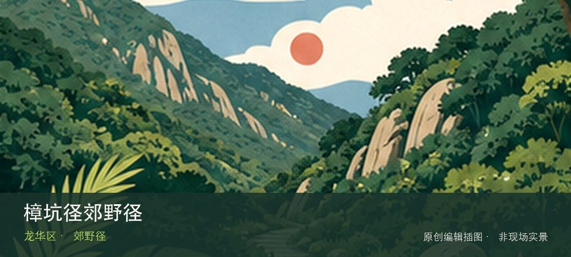

适合谁
适合有基础步行体力、愿意按天气调整路线的人；行动不便者应只选择平缓开放段。

SHENZHEN GUIDE · 217
民治北侧 · 郊野径
樟坑径郊野径位于民治北侧，新整理的郊野径借山林、社区水库边缘和标识步道提供短线自然体验，施工或养护变化需服从现场。先辨认樟坑径林下步道，再观察社区山体视野，两者共同说明这里为何不能被同类地点的泛化标签替代。现场不必追求一次走完，先在樟坑径林下步道与社区山体视野之间确定主线，再按体力、日照和天气保留折返方案。山地、滨水或林下路面会随降雨改变，当天预警和开放边界始终比旧轨迹更优先。
WHY GO
适合有基础步行体力、愿意按天气调整路线的人；行动不便者应只选择平缓开放段。
首次游览樟坑径郊野径不求走全，先完成樟坑径林下步道这一项观察，再根据同行者体力选择社区山体视野，并保留原路退出方案。
公共交通先到民治北侧片区，再以樟坑径郊野径公开参观入口为终点；多入口地点须按计划游线选择入口，并预先锁定返程站点。
导航至樟坑径郊野径官方开放入口配套或邻近正规公共停车场；周末满位即改乘公共交通，不在绿道口、村道或消防通道临停。
10 月至次年 4 月较舒适；4—9 月湿热且雷雨集中，强降雨前后不进入山脊、溪谷、陡坡或低洼路段。
NEARBY IDEAS
 编辑配图·非现场实景
编辑配图·非现场实景
上围艺术村位于观湖上围社区，旧村更新将公共艺术、展览和创意工作室嵌入居民区，开放强度随项目周期变化，安静时仍可看空间改造。
 编辑配图·非现场实景
编辑配图·非现场实景
观澜美术馆位于官方名录所列广场沿河路片区，官方美术馆名录将其列入宝安区，但名称容易与龙华观澜版画机构混淆，地址核验本身就是到访前置条件。
 编辑配图·非现场实景
编辑配图·非现场实景
观湖中心公园位于观湖街道观盛二路与观盛三路之间，近12公顷公园服务观湖产业片区，以缓坡草地、林荫与公共活动空间连接办公和社区。